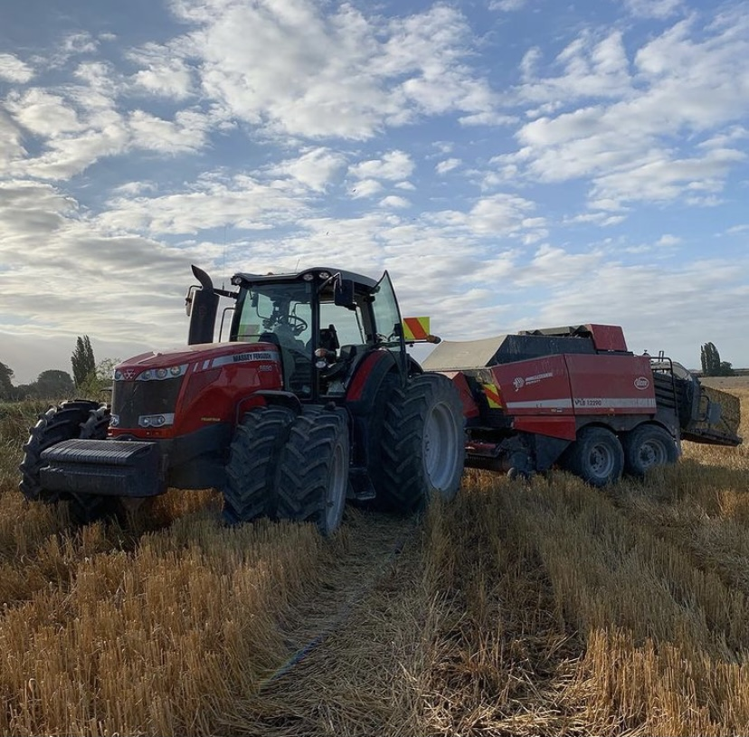

Massey-Ferguson
Story
 Massey Fergusons are reliable do lots of hours before you have to do maintenance and smooth running. Massey Ferguson was created with the merger between Massey-Harris and the Ferguson companies in 1952. The separate brands were retained until 1958, when the lines were merged and renamed Massey-Ferguson. The name was a shortened version of 'Massey-Harris-Ferguson'; the amalgamation of North American company name 'Massey Harris' with 'Harry Ferguson Limited' of England. Henry George "Harry" Ferguson (4 November 1884 – 25 October 1960) was an Irish engineer and inventor who is noted for his role in the development of the modern agricultural tractor, for becoming the first Irishman to build and fly his own aeroplane, and for developing the first four-wheel drive Formula One car. Massey-Harris was already a merger between the Massey manufacturing company and A Harris & Son. Following the merger all of the new tractors offered the three-point hitch and that was a major selling point originally designed by Ferguson. Conflicts after the merger caused problems for between the old rivals. The company continued to sell two lines; one under the Ferguson brand and the other under the Massey-Harris brand. There was even an entirely separate dealer network for the two brands. That produced confusion in both the dealers and the customers. It also produced conflict over future designs. In just under a year, Ferguson left the board in a dispute over the design of the Massey-Harris Model "50." Nevertheless Massey Ferguson went on to become one the largest worldwide agricultural manufacturers. Massey Ferguson developed a wide range of agricultural vehicles that are still in use today Restoring your Massey will require hard work to bring it back to its full glory. Although we can’t provide the elbow grease, Anglo can provide the parts to help you with your classic restoration project. Launched in December 1957 the MF35, was the first Massey Ferguson branded tractor. Its design came from the hugely popular 1955 Ferguson 35. Shop for Massey Ferguson 35 parts for your project. The MF135, was a successful model because of its reliability, maneuverability and power and was the first model in the MF 100 series. These included the MF 135, 145, 148, 150, 165, 168, 175, 178, 180, 185 and 188. The MF 1000 series were introduced around the same time: 1080, 1100, 1130 and 1150. Later came the MF 550, 560, 565, 575, 590, 595 (500 series). From the 1970s the 200 series tractor was introduced, which included the MF 230, 235, 240, 245, 250, 255, 260, 265, 270, 275, 278, 280, 285, 290, 298, 299.